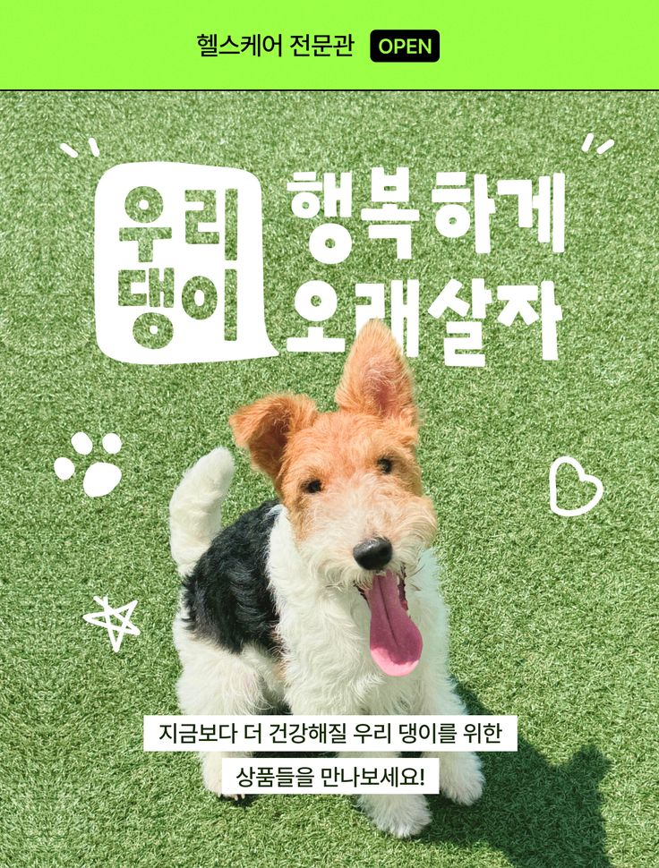

햇살이 들어오는 아침
창가에서 눈을 뜬 반려견. 부드러운 자연광과 가까운 시선으로 하루의 시작을 보여줍니다.
한 장의 이미지에서 움직이는 이야기로.
장면과 장면 사이에 마음을 담습니다.

영상 준비 중 · 기획안 보기
아침 산책부터 집에서 보내는 휴식까지. 반려동물과 함께하는 하루를 짧은 브랜드 필름으로 기획했습니다.
창가에서 눈을 뜬 반려견. 부드러운 자연광과 가까운 시선으로 하루의 시작을 보여줍니다.
잔디 위를 뛰어가는 모습과 발걸음의 클로즈업. 생동감 있는 장면으로 즐거움을 전달합니다.
산책을 마치고 쉬는 반려동물. 따뜻한 색감과 차분한 마무리로 함께하는 일상을 담습니다.